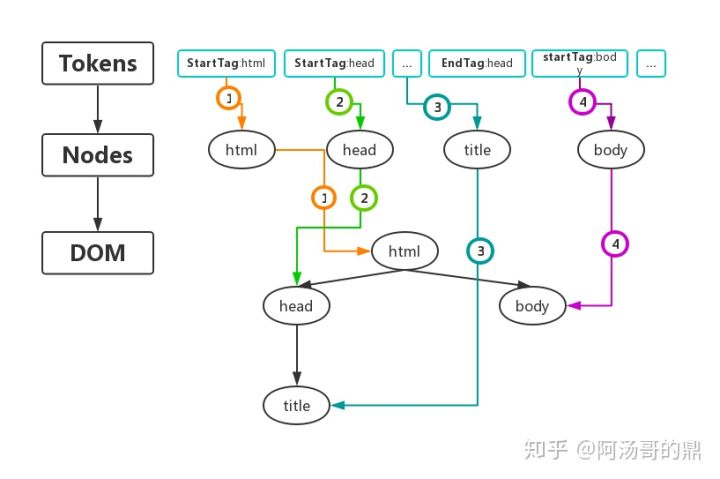

浏览器渲染
浏览器组件
浏览器大体上由以下几个组件组成，各个浏览器可能有一点不同。
- 界面控件 – 包括地址栏，前进后退，书签菜单等窗口上除了网页显示区域以外的部分
- 浏览器引擎 – 查询与操作渲染引擎的接口
- 渲染引擎 – 负责显示请求的内容。比如请求到HTML, 它会负责解析HTML、CSS并将结果显示到窗口中
- 网络 – 用于网络请求, 如HTTP请求。它包括平台无关的接口和各平台独立的实现
- UI后端 – 绘制基础元件，如组合框与窗口。它提供平台无关的接口，内部使用操作系统的相应实现
- JS解释器 - 用于解析执行JavaScript代码
- 数据存储持久层 - 浏览器需要把数据存到硬盘上，如cookies。新的HTML5规范规定了一个完整(虽然轻量级)的浏览器中的数据库 web database
注意：chrome浏览器与其他浏览器不同，chrome使用多个渲染引擎实例，每个Tab页一个，即每个Tab都是一个独立进程。
渲染过程

当用户输入一个URL时，浏览器就会向服务器发出一个请求，请求URL对应的资源:
1、浏览器将获取的HTML文档解析成DOM树。
2、处理CSS标记，构成层叠样式表模型CSSOM(CSS Object Model)。
3、将DOM和CSSOM合并为渲染树(rendering tree)，代表一系列将被渲染的对象。
4、计算出每个节点在屏幕中的位置，它被称之为布局layout。浏览器使用一种流式处理的方法，只需要一次绘制操作就可以布局所有的元素。
5、将渲染树的各个节点绘制到屏幕上，这一步被称为绘制painting。
详细渲染

DOMTree的构建
DOM 和 CSSOM 都是以Bytes → characters → tokens → nodes → object model. 这样的方式生成最终的数据。
浏览器的渲染从解析HTML文档开始，宏观上，可以分为下面几个步骤：
第一步（解析）：从网络或者磁盘下读取的HTML原始字节码，通过设置的charset编码，转换成相字符
第二步（token化）：通过词法分析器，将字符串解析成Token，Token中会标注出当前的Token是开始标签，还是结束标签，或者文本标签等。
第三步（生成Nodes并构建DOM树）：浏览器会根据Tokens里记录的开始标签，结束标签，将Tokens之间相互串联起来（带有结束标签的Token不会生成Node）。
Node包含了这个节点的所有属性。例如< img src="xxx.png" >标签最终生成出的节点对象中会保存图片地址等信息。
事实上，在构建DOM树时，不是要等所有的Tokens都转换成Nodes后才开始，而是一边生成Token一边采取深度遍历算法消耗Token来生成Node，如下图所示，图中有颜色的小数字代表构建的具体步骤，可以看出，首先生成出html Token,并消耗Token创建出html 节点对象，接着生成head Token并消耗Token创建出head节点对象......，当所有的Tokens都消耗完了，紧接着DOM树也就构建完了。

注意：有时在js中访问DOM时浏览器会报错，因为在上述的解析的过程中，如果碰到了script或者link标签，就会根据src对应的地址去加载资源，在script标签没有设置async/defer属性时，这个加载过程是下载并执行完全部的代码，此时，DOM树还没有完全创建完毕，这个时候如果js企图访问script标签后面的DOM元素，浏览器就会抛出找不到该DOM元素的错误。值得注意的是：从bytes到Tokens的这个过程，浏览器都可以交给其他单独的线程去处理，不会堵塞浏览器的渲染线程。但是后面的部分就都在渲染线程下进行了，也就是我们常说的js单线程环境。
CSSOMTree的构建
CSSOM的生成过程和DOM的生成过程十分相似，也是：1.解析，2.Token化，3.生成Nodes并构建CSSOMTree：
假设浏览器接到下面一段css
body {font-size: 16px;}
p {font-weight: bold;}
p span {display:none;}
span {color: red;}
img {float: right;}
最终会生成如下的CSSOMTree
从图中可以看出，最开始body有一个样式规则是font-size:16px，之后，在body这个样式基础上每个子节点还会添加自己单独的样式规则，比如span又添加了一个样式规则color:red。正是因为样式这种类似于继承的特性，浏览器设定了一条规则：CSSOMTree需要等到完全构建后才可以被使用，因为后面的属性可能会覆盖掉前面的设置。比如在上面的css代码基础上再添加一行代码p {font-size:12px}，那么之前设置的16px将会被覆盖成12px。
在标签没有设置async/defer属性时，js会阻塞DOM的生成。原因是js会改变DOMTree的内容，如果不阻塞，会出现一边生成DOM内容，一边修改DOM内容的情况，无法确保最终生成的DOMTree是确定唯一的。
如果JS试图在浏览器还未完成CSSOMTree的下载和构建时去操作CSS样式，浏览器会暂停脚本的运行和DOM的构建，直至浏览器完成了CSSOM的下载和构建。也就是说，JS脚本的出现会让CSSOM的构建阻塞DOM的构建。
渲染树的构建
DOM 树上每一个节点对应着网页里每一个元素，CSSOM树上每个节点对应着网页里每个元素的样式，并且此时浏览器也可以通过 JavaScript 操作DOM/CSSOM树，动态改变它的结构。但是DOM/CSSOM树本身并不能直接用于排版和渲染，浏览器还会生成另外一棵树：Render树
- Render 树上的每一个节点被称为：RenderObject。
- RenderObject跟 DOM 节点几乎是一一对应的，当一个可见的 DOM 节点被添加到 DOM 树上时，内核就会为它生成对应的 RenderOject 添加到 Render 树上。
- 其中，可见的DOM节点不包括：
- 一些不会体现在渲染输出中的节点（< html >< script >< link >….），会直接被忽略掉。
- 通过CSS隐藏的节点。例如上图中的span节点，因为有一个CSS显式规则在该节点上设置了display:none属性，那么它在生成RenderObject时会被直接忽略掉。
- Render 树是衔接浏览器排版引擎和渲染引擎之间的桥梁，它是排版引擎的输出，渲染引擎的输入。
布局
到目前为止，浏览器计算出了哪些节点是可见的以及它的信息和样式，接下来就需要计算这些节点在设备视口内的确切位置和大小，这个过程我们称之为“布局”。
布局最后的输出是一个“盒模型”：将所有相对测量值都转换成屏幕上的绝对像素。
渲染
最后，既然我们知道了哪些节点可见、它们的计算样式以及几何信息，我们终于可以将这些信息传递给最后一个阶段：将渲染树中的每个节点转换成屏幕上的实际像素：浏览器通过发出“Paint Setup”和“Paint”事件，将渲染树转换成屏幕上的像素。
渲染阻塞
CSS 被视为渲染 阻塞资源 (包括JS) ，这意味着浏览器将不会渲染任何已处理的内容，直至 CSSOM 构建完毕，才会进行下一阶段。
JavaScript 被认为是解释器阻塞资源，HTML解析会被JS阻塞，它不仅可以读取和修改 DOM 属性，还可以读取和修改 CSSOM 属性。
每次去执行JavaScript脚本都会严重地阻塞DOM树的构建，如果JavaScript脚本还操作了CSSOM，而正好这个CSSOM还没有下载和构建，浏览器甚至会延迟脚本执行和构建DOM，直至完成其CSSOM的下载和构建。所以，script标签的位置很重要。
CSS阻塞渲染意味着，在CSSOM完备前，页面将一直处理白屏状态，这就是为什么样式放在head中，仅仅是为了更快的解析CSS，保证更快的首次渲染。
当解析HTML的时候，会把新来的元素插入DOM树里面，同时去查找CSS，然后把对应的样式规则应用到元素上，查找样式表是按照从右到左的顺序去匹配的。
例如：div p {font-size: 16px}，会先寻找所有p标签并判断它的父标签是否为div之后才会决定要不要采用这个样式进行渲染）。
所以，我们平时写CSS时，尽量用id和class，千万不要过渡层叠。
平时谈及页面性能优化，经常会强调css文件应该放在html文档中的前面引入，js文件应该放在后面引入，这么做的原因是什么呢？
举个例子：本来，DOM构建和CSSOM构建是两个过程，井水不犯河水。假设DOM构建完成需要1s，CSSOM构建也需要1s，在DOM构建了0.2s时发现了一个link标签，此时完成这个操作需要的时间大概是1.2s，如下图所示：
而此时我们在HTML文档的中间插中入了一段JS代码，在DOM构建中间的过程中发现了这个script标签，假设这段JS代码只需要执行0.0001s，那么完成这个操作需要的时间就会变成：
那如果我们把css放到前面，js放到最后引入时，构建时间会变成
由此可见，虽然只是插入了小小的一段只运行0.0001s的js代码，不同的引入时机也会严重影响DOMTree的构建速度。
简而言之，如果在DOM，CSSOM和JavaScript执行之间引入大量的依赖关系，可能会导致浏览器在处理渲染资源时出现大幅度延迟：
- 当浏览器遇到一个script标签时，DOMTree的构建将被暂停，直至脚本执行完毕
- JavaScript可以查询和修改DOMTree与CSSOMTree
- 直至CSSOM构建完毕，JavaScript才会执行
- 脚本在文档中的位置很重要
回流和重绘
回流（reflow）
当render tree中的一部分(或全部)因为元素的规模尺寸，布局，隐藏等改变而需要重新渲染构建。reflow 会从 html 这个 root frame 开始递归往下，依次计算所有的结点几何尺寸和位置。每个页面至少需要一次回流，就是在页面第一次加载的时候，这时候是一定会发生回流的，因为要构建render tree。在回流的时候，浏览器会使渲染树中受到影响的部分失效，并重新构造这部分渲染树，完成回流后，浏览器会重新绘制受影响的部分到屏幕中，该过程成为重绘。
reflow 几乎是无法避免的。现在界面上流行的一些效果，比如树状目录的折叠、展开（实质上是元素的显示与隐藏）、删除、添加等，都将引起浏览器的 reflow。鼠标滑过、点击……只要这些行为引起了页面上某些元素的占位面积、定位方式、边距等属性的变化，都会引起它内部、周围甚至整个页面的重新渲染。通常我们都无法预估浏览器到底会 reflow 哪一部分的代码，它们都彼此相互影响着。
每次Reflow，Repaint后浏览器还需要合并渲染层并输出到屏幕上。所有的这些都会是动画卡顿的原因。Reflow 的成本比 Repaint 的成本高得多的多。一个结点的 Reflow 很有可能导致子结点，甚至父点以及同级结点的 Reflow 。
重绘（repaint）
改变某个元素的背景色、文字颜色、边框颜色等等不影响它周围或内部布局的属性时，屏幕的一部分要重画，但是元素的几何尺寸没有变。
区别
回流必将引起重绘，而重绘不一定会引起回流。比如：只有颜色改变的时候就只会发生重绘而不会引起回流，而回流会重新渲染导致重绘。
- display:none 会触发 reflow，而 visibility:hidden 只会触发 repaint，因为没有发生位置变化
- 有些情况下，比如 resize 窗口，改变了页面默认的字体等。对于这些操作，浏览器会马上进行 reflow
- 回流
- 页面第一次渲染（初始化）
- DOM树变化（如：增删节点）
- Render树变化（如：padding改变）
- 浏览器窗口resize
- 获取元素的某些属性
- 重绘
- 背景色、颜色、字体改变（注意：字体大小发生变化时，会触发回流）
优化
- 合法地去书写HTML和CSS ，且不要忘了文档编码类型(UTF-8)。
- 样式文件应当在head标签中，而脚本文件在body结束前，这样可以防止阻塞的方式。
- 简化并优化CSS选择器，尽量将嵌套层减少到最小。
- DOM 的多个读操作（或多个写操作），应该放在一起。不要两个读操作之间，加入一个写操作。
- 如果某个样式是通过重排得到的，那么最好缓存结果。避免下一次用到的时候，浏览器又要重排。
- 不要一条条地改变样式，而要通过改变class，或者csstext属性，一次性地改变样式。
- 尽量用transform来做形变和位移。
- 尽量使用离线DOM，而不是真实的网页DOM，来改变元素样式。比如，操作Document Fragment对象，完成后再把这个对象加入DOM。再比如，使用cloneNode()方法，在克隆的节点上进行操作，然后再用克隆的节点替换原始节点。
- 先将元素设为display: none（需要1次重排和重绘），然后对这个节点进行100次操作，最后再恢复显示（需要1次重排和重绘）。这样一来，你就用两次重新渲染，取代了可能高达100次的重新渲染。
- position属性为absolute或fixed的元素，重排的开销会比较小，因为不用考虑它对其他元素的影响。
- 只在必要的时候，才将元素的display属性为可见，因为不可见的元素不影响重排和重绘。另外，visibility : hidden的元素只对重绘有影响，不影响重排。
- 使用window.requestAnimationFrame()、window.requestIdleCallback()这两个方法调节重新渲染
oDiv.style.fontSize = '20px';
oDiv.style.color = 'red';
oDiv.style.padding = '5px';
// 1. cssText
oDiv.style.cssText = 'font-size: 20px; color: red; padding: 5px;';
// 2. class
oDiv.className = 'active';
标签
链接
超链接target属性的取值和应用
| 取值 | 应用 |
|---|---|
| _self | 默认值，在当前窗口或者框架(包括iframe)中加载目标文档。 |
| _blank | 在新窗口中打开被链接文档，iframe中也是 |
| _parent | 在父框架中打开（比如你在页面中嵌套一个iframe1，再在iframe1里面嵌套一个iframe2，那么iframe2里的超链接就会在iframe1打开，并且会覆盖iframe1的所有内容），当a标签本身在顶层时，则与 _self 相同 |
| _top | 在浏览器的整个窗口显示内容，忽略掉所有的框架结构 |
| framename | 在指定的框架中打开被链接文档。 |
| 任意字符 | 若该链接不是已打开的页面，则在新窗口中打开，与_blank一致；若该链接已经打开，则跳转到该标签页并刷新页面。 |
表单
label的属性和作用
<label for="name" accesskey="N">姓名：</label><input type="text" id="name" />
<label for="password" accesskey="P">密码</label><input type="password" id="password" />
FOR属性：表示Label标签要绑定的HTML元素，你点击这个标签的时候，所绑定的元素将获取焦点。
ACCESSKEY属性：表示访问Label标签所绑定的元素的热键，当您按下热键，所绑定的元素将获取焦点。在这里必须指定for才能起作用。所设置的快捷键不能与浏览器的快捷键冲突，否则将优先激活浏览器的快捷键。
关闭表单自动完成
autocomplete="off" 可放在表单，也可放在输入框
<form action="demo_form.asp" method="get" autocomplete="on">
First name:<input type="text" name="fname" /><br /> <!-- 需要设置name值 -->
Last name: <input type="text" name="lname" /><br />
E-mail: <input type="email" name="email" autocomplete="off" /><br />
<input type="submit" />
</form>
meta
viewport
viewport 就是视区窗口，也就是浏览器中显示网页的部分。PC 端上基本等于设备显示区域，但在移动端上 viewport 会超出设备的显示区域（即会有横向滚动条出现），设备默认的 viewport 在 980 – 1024 之间。
为了让移动端可以很好地显示页面，因此需要对 viewport 进行设置。相关的设置值如下：
| 属性 | 作用 |
|---|---|
| width | 设置layout viewport 的宽度，为一个正整数，或字符串"width-device" |
| initial-scale | 设置页面的初始缩放值，为一个数字，可以带小数 |
| minimum-scale | 允许用户的最小缩放值，为一个数字，可以带小数 |
| maximum-scale | 允许用户的最大缩放值，为一个数字，可以带小数 |
| height | 设置layout viewport 的高度，这个属性对我们并不重要，很少使用 |
| user-scalable | 是否允许用户进行缩放，值为"no"或"yes", no 代表不允许，yes代表允许 |
代码演示：
<meta name="viewport" content="width=device-width, initial-scale=1.0, maximum-scale=1.0, user-scalable=0">
map+area
map：用于定义一个客户端图像映射。图像映射（image-map）指带有可点击区域的一幅图像。
area：定义 map 的可点击区域。
当 map 设置 name 或者 id 属性时， img 标签的 usemap 属性会根据 map 的 id 和 name 属性来关联 map（由于浏览器的不同，usemap属性接收二者之一的值，所以通常name和id属性二者都写，值相同）。
map标签的用途：是与img标签绑定使用的，常被用来赋予给客户端图像某处区域特殊的含义，点击该区域可跳转到新的文档。
area属性:
- alt: 当图片无法加载的时候显示的提示文字
- shape: 定义可点击区域的形状，有如下值
- circ或circle:圆形
- poly或polygon:多边型
- rect或rectangle:矩形
- coords: 定义坐标值
- 当shape为circ或circle(圆形)时,coords的值应该为 (x,y,r) x,y是圆心的坐标,r是半径
- 当shape为rect或rectangle(矩形)时,coords的值应该为 (x1,y1,x2,y2) x1,y1是矩形的左上角坐标 x2.y2是矩形的右下角坐标
- 当shape为poly或polygon(多边形)时,coords的值应该为 (x1,y1,x2,y2,x3,y3......) 当可点击区域为多边形时,coords的值应该为多边形各个顶点的坐标。注意:最后一个坐标应与第一个坐标一致,用于关闭多边形,就像走路,不管你怎么走,最后回到出发地点,你走过的路线才会形成一个封闭图形。
- href: 定义一个URL,当点击设定的区域时访问该URL
- target: 规定href在何处打开
- _blank: 在新窗口打开URL。
- _self: 在同级框架中打开URL。
- _parent: 在父框架中打开URL。
- _top: 这整个窗口中打开URL。
- frameName: 在指定的框架中打开URL。
应用：
<img src="1.jpg" width="600px" height="350px" usemap="img-map-test" border="0">
<map name="img-map-test" id="img-map-test">
<area alt="1-1.jpg" shape="rect" coords="0,0,300,350" href="1-1.jpg">
<area alt="1-2.jpg" shape="rect" coords="300,0,600,350" href="1-2.jpg">
</map>
拓展：地图点击不通省份跳转不同页面或链接。
置换元素
浏览器根据元素的标签和属性，来决定元素的具体显示内容。如 img、input、select、textarea、button、label 等。
例如：浏览器根据 img 标签的 src 属性显示图片，而如果查看 (x)html 代码，则看不到图片的实际内容；input 标签，根据type 属性决定是显示输入框还是按钮。
置换元素在其显示中生成了框，这也就是有的内联元素能够设置宽高的原因。
置换元素区别于一般的 inline 元素，他们本身拥有内在尺寸（宽度，高度，宽高比），也可以设置 width / height 属性，他们的性质同行内元素设置了 inline-block 一样。
非置换元素：官网并未对非置换元素做出具体定义，可以认为除去置换元素都是非置换元素。
HTML中的大多数元素都是不可置换元素，例如 label 标签，p 标签里的内容会被浏览器直接显示给用户。
题库
问题
页面导入样式时，使用link和@import有什么区别
- link是HTML标签，@import是css提供的。
- link引入的样式页面加载时同时加载，@import引入的样式需等页面加载完成后再加载。
- link没有兼容性问题，@import不兼容ie5以下。
- link可以通过js操作DOM动态引入样式表改变样式，而@import不可以。
HTML5的离线储存
- HTML5离线存储存储功能非常强大，它的作用（优点）是：在用户没有与因特网连接时，可以正常访问站点或应用，加快资源的加载速度，减少服务器负载，在用户与因特网连接时，自动更新缓存数据。
- 使用：
首先，在html页面头部加入一个manifest的属性:
然后创建manifest.appcache文件：<!DOCTYPE HTML> <html manifest = "cache.manifest"> ... </html>CACHE MANIFEST #v0.11 CACHE: js/app.js css/style.css NETWORK: resourse/logo.png FALLBACK: offline.html- CACHE MANIFEST放在第一行
- CACHE: 表示需要离线存储的资源列表，由于包含manifest文件的页面将被自动离线存储，所以不需要列出来
- NETWORK: 表示在线才能访问的资源列表，如果CACHE列表里也存在，则CACHE优先级更高
可以使用 “*” 来指示所有其他资源/文件都需要因特网连接：NETWORK: *
- FALLBACK: 在此标题下列出的文件规定当页面无法访问时的回退页面。比如上面这个文件表示的就是如果访问根目录下任何一个资源失败了，那么就去访问offline.html。
- 原理：
HTML5的离线存储是基于一个新建的.appcache文件的，通过这个文件上的解析清单离线存储资源，这些资源就会像cookie一样被存储了下来。之后当网络在处于离线状态下时，浏览器会通过被离线存储的数据进行页面展示。 - 浏览器如何解析manifest
在线情况：浏览器发现html头部有manifest属性，他会请求manifest文件，如果是第一次访问，那么浏览器会根据manifest文件的内容下载相应的资源并且进行离线存储.如果已经访问过并存储，那么浏览器使用离线的资源价值，然后对比新的文件，如果没有发生改变就不做任何操作，如果文件改变了，那么就会重新下载文件中的资源并进行离线存储
离线情况：浏览器就直接使用离线存储资源 - 注意
- 站点离线存储的容量限制是5M
- 如果manifest文件，或者内部列举的某一个文件不能正常下载，整个更新过程将视为失败，浏览器继续全部使用老的缓存
- 引用manifest的html必须与manifest文件同源，在同一个域下
- 在manifest中使用的相对路径，相对参照物为manifest文件
- CACHE MANIFEST字符串硬在第一行，且必不可少
- 系统会自动缓存引用清单文件的HTML文件
- manifest文件中CACHE则与NETWORK，FALLBACK的位置顺序没有关系，如果是隐式声明需要在最前面
- FALLBACK中的资源必须和manifest文件同源
- 当一个资源被缓存后，该浏览器直接请求这个绝对路径也会访问缓存中的资源。站点中的其他页面即使没有设置manifest属性，请求的资源如果在缓存中也从缓存中访问
- 当manifest文件发生改变时，资源请求本身也会触发更新
其他相关参考《HTML5的文件离线存储怎么使用,工作原理?》
浏览器内多个标签页间的通信
总结：
- cookie + setInterval方式
- localStorage方式
- webSocket方式
- SharedWorker方式
浏览器内核
浏览器内核主要分成两个部分：渲染引擎(layout engineer 或者 Rendering Engine)和JS引擎。
渲染引擎：负责取得网页的内容(html，xml和图像等)，整理讯息(例如加入css)，以及计算网页的显示方式，然后输出到显示器或打印机。浏览器的内核的不同对于网页的语法解释会有不同，所以渲染的效果也不同。所有网页浏览器、电子邮件客户端以及它需要编辑、显示网络内容的应用程序都需要内核。
JS引擎：解析和执行JavaScript来实现网页的动态效果。
最开始渲染引擎和JS引擎并没有区分的很明确，后来JS引擎越来越独立，内核就倾向于只指渲染引擎。
常用的浏览器内核
1、Trident(IE内核)
国内很多的双核浏览器的其中一核便是 Trident，也有称"兼容模式"。
代表：IE、腾讯TT、猎豹安全浏览器、360极速浏览器、百度浏览器等。Window10 发布后，IE 将其内置浏览器命名为 Edge，Edge 最显著的特点就是新内核 EdgeHTML。
2、Gecko(firefox)
Gecko(Firefox 内核)： Mozilla FireFox(火狐浏览器) 采用该内核，代码完全公开，因此，其可开发程度很高，但今年打开速度慢、升级频繁。
3、webkit(Safari)
Safari 是苹果公司开发的浏览器，所用浏览器内核的名称是大名鼎鼎的 WebKit。现在很多人错误地把 webkit 叫做 chrome内核（即使 chrome内核已经是 blink 了）。
代表浏览器：傲游浏览器3、 Apple Safari (Win/Mac/iPhone/iPad)、Symbian手机浏览器、Android 默认浏览器。
4、Chromium/Bink(chrome)
Chromium 项目中研发 Blink 渲染引擎（即浏览器核心），内置于 Chrome 浏览器之中。Blink 其实是 WebKit 的分支。
大部分国产浏览器最新版都采用Blink内核。
5、Presto(Opera)
Presto 是挪威产浏览器 opera 的 "前任" 内核，最新版已经与谷歌一致。
移动端的浏览器内核主要说的是系统内置浏览器的内核
目前移动设备浏览器上常用的内核有 Webkit，Blink，Trident，Gecko 等，其中
iPhone 和 iPad 等苹果 iOS 平台主要是 WebKit，
Android 4.4 之前的 Android 系统浏览器内核是 WebKit，
Android4.4 系统浏览器切换到了Chromium，内核是 Webkit 的分支 Blink，
Windows Phone 8 系统浏览器内核是 Trident。
HTML5为什么只需要写<!DOCTYPE>
在 HTML 4.01 中有三种 <!DOCTYPE> 声明，在 HTML5 中只有一种。
HTML 5
<!DOCTYPE html>
HTML 4.01 Strict
该 DTD 包含所有 HTML 元素和属性，但不包括展示性的和弃用的元素（比如 font）。不允许框架集（Framesets）。
<!DOCTYPE HTML PUBLIC "-//W3C//DTD HTML 4.01//EN" "http://www.w3.org/TR/html4/strict.dtd">
HTML 4.01 Transitional
该 DTD 包含所有 HTML 元素和属性，包括展示性的和弃用的元素（比如 font）。不允许框架集（Framesets）。
<!DOCTYPE HTML PUBLIC "-//W3C//DTD HTML 4.01 Transitional//EN" "http://www.w3.org/TR/html4/loose.dtd">
HTML 4.01 Frameset
该 DTD 等同于 HTML 4.01 Transitional，但允许框架集内容。
<!DOCTYPE HTML PUBLIC "-//W3C//DTD HTML 4.01 Frameset//EN" "http://www.w3.org/TR/html4/frameset.dtd">
HTML5 不基于 SGML, 因此不要要对 DTD 进行引用，但是需要 DOCTYPE 来规范浏览器的行为（让浏览器按照它们应该的方式来运行）。
HTML4.0.1 基于 SGML ，所以需要对 DTD 进行引用，才能让浏览器知道该文档所使用的的文档类型，正确呈现内容。
SGML: SGML 是国际上定义电子文档和内容描述的标准。它源于1969年IBM公司开发的文档描述语言 GML ，GML主要用来解决不同系统中文档格式不同的问题。后经过多年发展，1986 年经 ISO 批准为国际标 准ISO8897，并被称为 SGML。
制定 SGML 的基本思想是把文档的内容与样式分开。在 SGML 中，标记分两种：一种用来描述文档显示的样式，称为程序标记；另一种用来描述文档中语句的用途，称为描述标记。一个 SGML 文件通常分三个层次：结构、内容和样式。结构为组织文档的元素提供框架，内容是信息本身，样式控制内容的显示。
SGML 的平台无关性、结构化、可扩展等特性，使得它使用范围很广，被许多大型公司用来创建和发布信息。
DTD: 文档类型定义（Document Type Definition，DTD）
<!DOCTYPE> 声明必须是 HTML 文档的第一行，位于 < html > 标签之前。
<!DOCTYPE> 声明不是 HTML 标签；它是指示 web 浏览器关于页面使用哪个 HTML 版本进行编写的指令。
title与h1 b与strong i与em的区别
title与h1的区别
定义：
title是网站标题
h1是文章主题
作用：
title概括网站信息，可以直接告诉搜索引擎和用户这个网站是关于什么主题和内容的，是显示在网页Tab栏里的。
h1突出文章主题，面对用户，更突出其视觉效果，指向页面主体信息，是显示在网页中的。
b与strong的区别
定义：
b(bold)是实体标签，用来给文字加粗。
strong是逻辑标签，作用是加强字符语气。
区别：
b标签只是加粗的样式，没有实际含义，常用来表达无强调或着重意味的粗体文字，如文章摘要中的关键词、 评测文章中的产品名称、文章的导言。
strong表示标签内字符重要，用以强调，其默认格式是加粗，但是可以通 过CSS添加样式，使用别的样式强调。
i与em的区别
定义：
i(italic)是实体标签，用来使字符倾斜。
em(emphasis)是逻辑标签，作用是强调文本内容。
区别：
i标签只是斜体的样式，没有实际含义，常用来表达无强调或着重意味的斜体，比如生物学名、术语、外来语。
em表示标签内字符重要，用以强调，其默认格式是斜体，但是可以通过CSS添加样式。
建议：对于搜索引擎来说 strong 和 em 比 b 和 i 要重视的多。为了符合现在W3C的标准，还是推荐使用strong和em标签。
其它：
物理元素所强调的是一种物理行为，比如说我把一段文字用b标记加粗了，我的意思是告诉浏览器应该给我加粗了显示这段文字，从单词的语义也可以分析得出，b是Bold(加粗)的简写，所以这个B标记所传达的意思只是加粗，没有任何其它的作用。
而Strong我们从字面理解就可以知道他是强调的意思，所以我们用这个标记向浏览器传达了一个强调某段文字的消息，而这个Strong就是我们所说的逻辑元素，他是强调文档逻辑的，并非是通知浏览器应该如何显示。
编程
怎样在页面上实现一个圆形可点击区域
1、圆角属性(border-radius)
<style>
#box {
width: 100px;
height: 100px;
border-radius: 50%;
background: lightblue;
}
#box:hover {
cursor: pointer;
}
</style>
<div id="box"></div>
<script>
document.querySelector('#box').onclick = function () {
console.log('点击圆形区域');
}
</script>
2、map+area
这个似乎只能和图片结合使用
<style>
area:hover {
cursor: pointer;
}
</style>
<img src="https://avatar.csdnimg.cn/6/5/6/3_dsdsds111_1557377821.jpg" alt="map" usemap="#circleArea" width="200">
<map name="circleArea" id="circleArea">
<area id="box" shape="circle" coords="100,100,100" href ="javascript:0;" alt="圆形点击区域" />
</map>
<script>
document.querySelector('#box').onclick = function () {
console.log('点击圆形区域');
}
</script>
最后会有一个中间圆形的点击区域
3、svg
<svg width="100%" height="100%" version="1.1" xmlns="http://www.w3.org/2000/svg">
<circle cx="100" cy="50" r="40" stroke="black" stroke-width="2" fill="red" onclick="handleClick()"/>
</svg>
<script>
function handleClick() {
console.log('点击圆形区域');
}
</script>
4、canvas
有多种实现和监听方式，这里简单介绍。
<style>
canvas {
border: 1px solid #d3d3d3;
}
</style>
<canvas id="myCanvas" width="200" height="200"></canvas>
<script>
let myCanvas = document.querySelector('#myCanvas');
let ctx = myCanvas.getContext("2d");
ctx.beginPath();
ctx.arc(100, 100, 50, 0, 2*Math.PI);
ctx.stroke();
myCanvas.addEventListener("click" , function(e){
let x = 100 - e.layerX;
let y = 100 - e.layerY;
let isMove = Math.sqrt(x * x + y * y);
if(isMove < 50)
console.log('点击圆形区域');
});
</script>